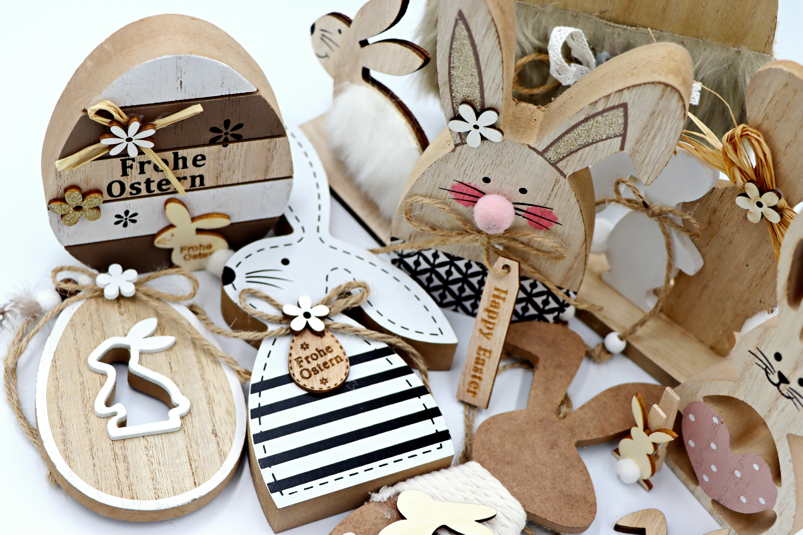
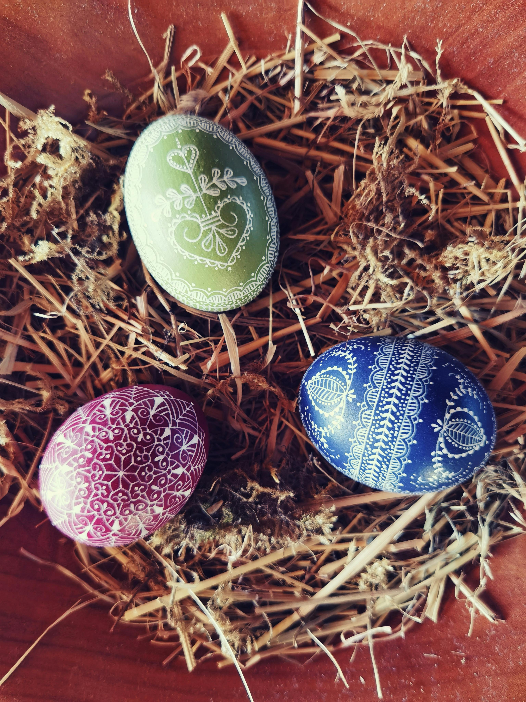
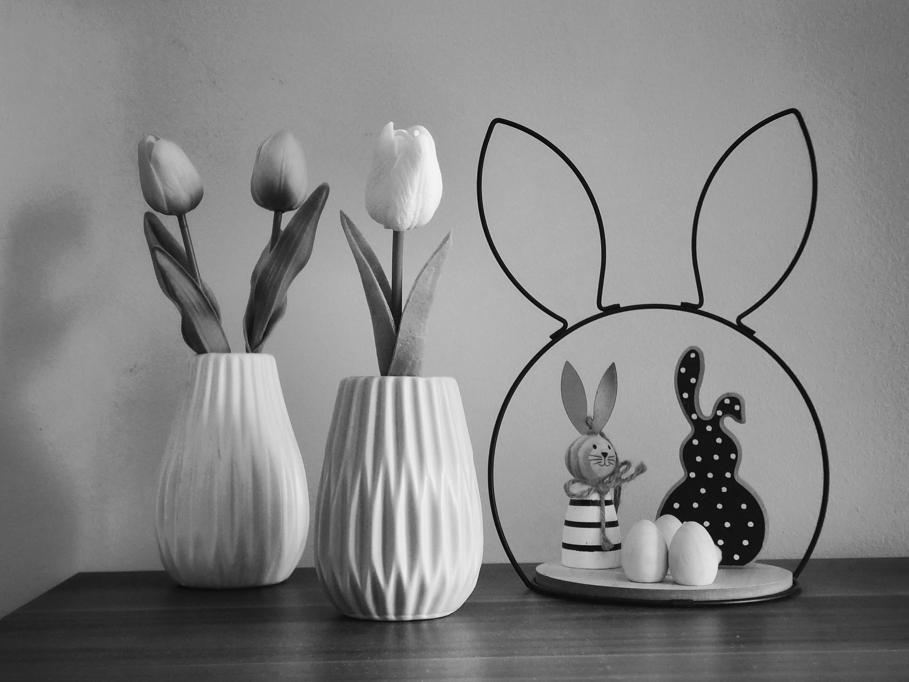
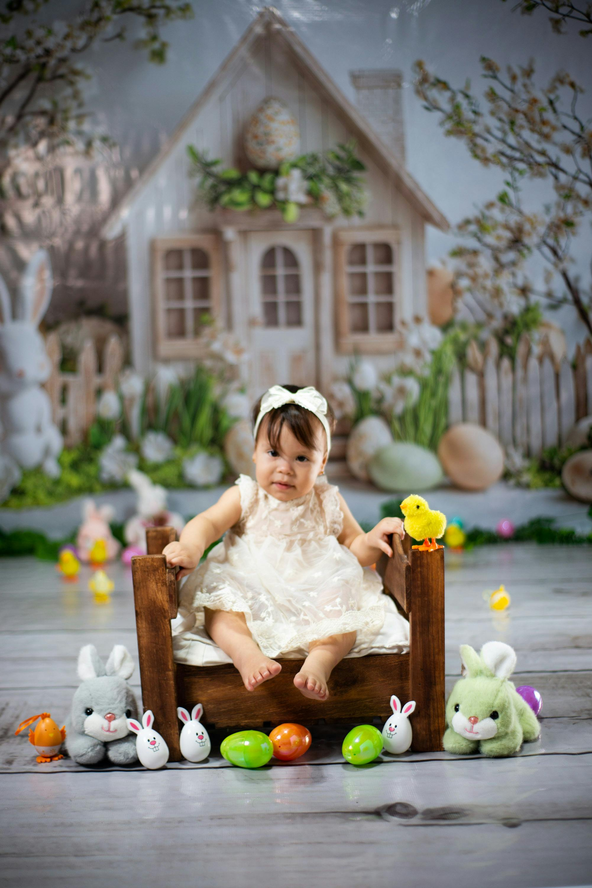

A Páscoa
No cristianismo, a Páscoa ou Domingo da Ressurreição é uma festividade religiosa e um feriado que celebra a ressurreição de Jesus ocorrida no terceiro dia após sua crucificação no Calvário, conforme o relato do Novo Testamento. É a principal celebração do ano litúrgico cristão e também a mais antiga e importante festa cristã. A data da Páscoa determina todas as demais datas das festas móveis cristãs, exceto as relacionadas ao Advento. O domingo de Páscoa marca o ápice da Paixão de Cristo e é precedido pela Quaresma, um período de quarenta dias de jejum, orações e penitências. O termo "Páscoa" deriva, através do latim Pascha e do grego bíblico Πάσχα Paskha, do hebraico פֶּסַח (Pesaḥ ou Pesach), a Páscoa judaica. A última semana da Quaresma é chamada de Semana Santa, que contém o chamado Tríduo Pascal, incluindo a Quinta-Feira Santa, que comemora a Última Ceia e a cerimônia do Lava pés que a precedeu e também a Sexta-Feira Santa, que relembra a crucificação e morte de Jesus. A Páscoa é seguida por um período de cinquenta dias chamado Tempo Pascal que se estende até ao Domingo de Pentecostes. A Páscoa é uma festa móvel, o que significa que sua data não é fixa em relação ao calendário civil. O Primeiro Concílio de Niceia (325) estabeleceu a data da Páscoa como sendo o primeiro domingo depois da lua cheia após o início do equinócio vernal (a chamada lua cheia pascal). Do ponto de vista eclesiástico, o equinócio vernal acontece em 21 de março (embora ocorra no dia 20 de março na maioria dos anos do ponto de vista astronômico) e a "lua cheia" não ocorre necessariamente na data correta astronômica. Por isso, a data da Páscoa varia desde 22 de março até 25 de abril. Os cristãos orientais baseiam seus cálculos no calendário juliano, cuja data de 21 de março corresponde, no século XXI, ao dia 3 de abril no calendário gregoriano utilizado no ocidente. Por conseguinte, a Páscoa no oriente varia entre 4 de abril e 8 de maio, inclusive.
Galeria De Fotos
   
As 5 dicas do que presentear na Pascoa
1 - Saquinhos em formato de cenoura
Essa lembrancinha é simples de fazer e montar, além de que todos os ‘ingredientes’ necessários são fáceis de serem encontrados, seja em lojas de papelaria ou mercado. Com chocolates disquetes na cor laranja, o saquinho estará bem recheado e com cara — e gosto — de Páscoa. O fitilho verde no acabamento é o detalhe que simula a parte verde da cenoura, deixando-o ainda mais irresistível.
2 - Potes com orelhinhas de coelho
Essa opção conta com potes de vidro ou acrílico que podem ser facilmente encontrados para venda em atacado. Mas, caso opte por reproduzir em casa, é possível colocar a mão na massa com ajuda de EVA ou feltro cortados em formato de orelhas de coelho. E nem é preciso dizer que elas são o verdadeiro charme dessa lembrancinha, né? Mas, para finalizar com chave de ouro, acrescente sabor com mini ovos de Páscoa
3 - Caixa com brigadeiros temáticos
Mais brasileira impossível! Essa caixa com brigadeiros artesanais personalizados com cenouras e coelhos irá deixar a pessoa presenteada com água na boca. Além disso, usar caixinhas de papel com estampa de coelhinhos e finalizá-las com tags com frases como “Feliz Páscoa” vai garantir que a sua lembrancinha seja sempre lembrada com carinho.
4 - Coelhinhos de chocolates
Esses palitinhos são fofos na mesma medida de que são deliciosos! Feitos com chocolate derretido em formato de coelho, suas gravatas podem ser compradas já prontas para colar na base do palito. Dessa forma, você terá ótimas lembrancinhas que podem ser usadas até mesmo na decoração da mesa de Páscoa.
5 - Cartões personalizados com bombons
Para quem precisa economizar, mas ainda quer caprichar no presente, uma opção é elaborar cartões com mensagens curtas e cheias de emoção. Por fim, basta acrescentar um pouco de doçura com bombons de diferentes tipos.